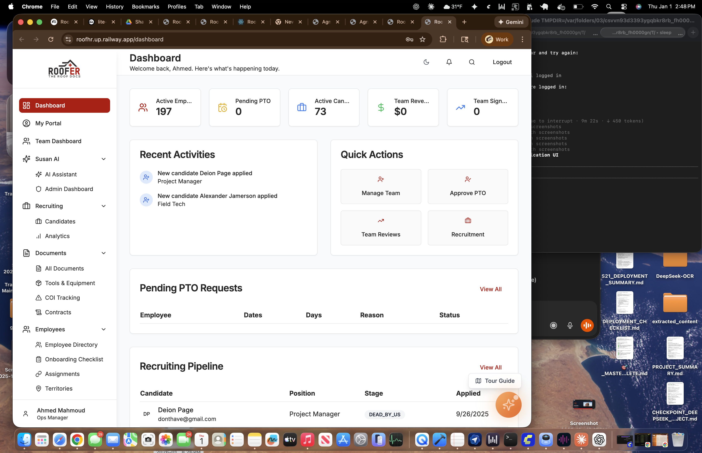
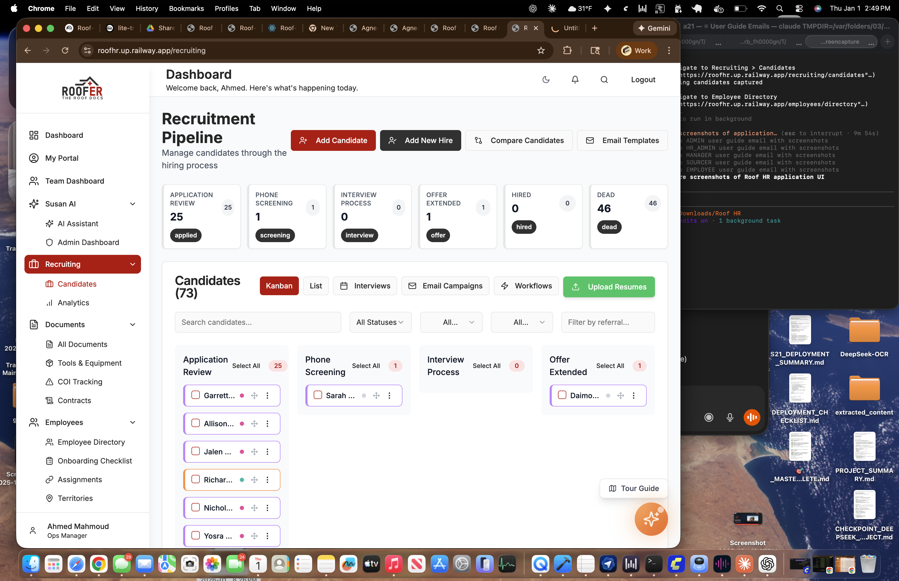

Welcome, Admin!
As an Admin, you have full access to all features in Roof HR. This guide will walk you through every section of the system.
1. Logging In
1
Go to roofhr.up.railway.app
2
Enter your @theroofdocs.com email address
3
Enter your password and click "Sign In"

Login page with email and password fields
2. Your Dashboard
After logging in, you'll see the main dashboard with key metrics and quick actions.

Admin Dashboard with metrics and quick actions
3. Navigation Menu (Left Sidebar)
The sidebar on the left gives you access to all features. Here's what each section does:
Sidebar navigation showing all admin menu options
4. Key Features You Can Access
Employee Management
1
Click "Employees" in the sidebar
2
Click "Employee Directory" to see all employees
3
Use "Add Employee" button (top right) to add new team members
4
Click the Edit or Delete icons next to any employee to modify their info

Employee Directory with management controls
Recruiting
1
Click "Recruiting" > "Candidates"
2
View all candidates in the pipeline
3
Click a candidate to view details, schedule interviews, or move stages
4
Use "Analytics" to see recruiting metrics
Documents & Contracts
1
Click "Documents" in the sidebar
2
"All Documents" - View and upload company documents
3
"Tools & Equipment" - Track equipment assignments
4
"COI Tracking" - Manage certificates of insurance
5
"Contracts" - Create, send, and track employee contracts
PTO Management
1
Click "Time Off" > "PTO Requests"
2
View all pending, approved, and denied requests
3
Click Approve or Deny on pending requests
4
Go to "PTO Policies" to configure time-off rules
Tip: Only Ahmed, Ford, Reese, and Oliver can approve PTO requests regardless of their role.
Facilities
1
Click "Facilities" to expand
2
"Attendance" - View employee check-ins and time tracking
3
"Meeting Rooms" - Manage room bookings
4
"Room Calendar" - Visual calendar of room availability
5. Your Full Access Summary
| Feature | Your Access |
|---|
| Dashboard | Full Access |
| Employee Directory | View, Add, Edit, Delete |
| Recruiting | All Candidates + Analytics |
| Documents | All Documents |
| COI Tracking | Full Access |
| Contracts | Create, Send, View All |
| Facilities | Full Access |
| PTO | View All + Manage Policies |
| Reviews | Full Access |
| Settings | Full Access |
Important: With great power comes great responsibility. Changes you make affect the entire organization. Double-check before deleting records.